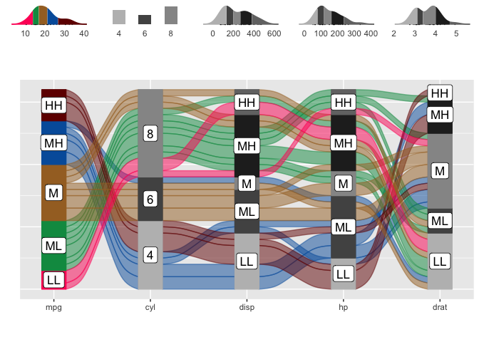

Alluvial plots are similar to sankey diagrams and visualise categorical data over multiple dimensions as flows. Rosval et. al. 2010 Their graphical grammar however is a bit more complex then that of a regular x/y plots. The ggalluvial package made a great job of translating that grammar into ggplot2 syntax and gives you many option to tweak the appearance of an alluvial plot, however there still remains a multi-layered complexity that makes it difficult to use ‘ggalluvial’ for explorative data analysis. ‘easyalluvial’ provides a simple interface to this package that allows you to produce a decent alluvial plot from any dataframe in either long or wide format from a single line of code while also handling continuous data. It is meant to allow a quick visualisation of entire dataframes with a focus on different colouring options that can make alluvial plots a great tool for data exploration.
Features
- plot alluvial graph with a single line of code of a given dataframe
- support for wide and long data format (wiki, wide vs. long/narrow data)
- automatically transforms numerical to categorical data
- helper functions for variable selection
- convenient parameters for coloring and ordering
- marginal histograms
- model agnostic partial dependence and model response alluvial plots with 4 dimensions
- interactive plots with
easyalluvialandparcats
Installation
CRAN
install.packages('easyalluvial')Development Version
# install.packages("devtools")
devtools::install_github("erblast/easyalluvial")Examples
suppressPackageStartupMessages( require(tidyverse) )
suppressPackageStartupMessages( require(easyalluvial) )Alluvial from data in wide format
Sample Data
| mpg | cyl | disp | hp | drat | wt | qsec | vs | am | gear | carb | ids |
|---|---|---|---|---|---|---|---|---|---|---|---|
| 21.0 | 6 | 160 | 110 | 3.90 | 2.620 | 16.46 | V | manual | 4 | 4 | Mazda RX4 |
| 21.0 | 6 | 160 | 110 | 3.90 | 2.875 | 17.02 | V | manual | 4 | 4 | Mazda RX4 Wag |
| 22.8 | 4 | 108 | 93 | 3.85 | 2.320 | 18.61 | S | manual | 4 | 1 | Datsun 710 |
| 21.4 | 6 | 258 | 110 | 3.08 | 3.215 | 19.44 | S | automatic | 3 | 1 | Hornet 4 Drive |
| 18.7 | 8 | 360 | 175 | 3.15 | 3.440 | 17.02 | V | automatic | 3 | 2 | Hornet Sportabout |
| 18.1 | 6 | 225 | 105 | 2.76 | 3.460 | 20.22 | S | automatic | 3 | 1 | Valiant |
Plot
Continuous Variables will be automatically binned as follows.
- High, High (HH)
- Medium, High (MH)
- Medium (M)
- Medium, Low (ML)
- Low, Low (LL)
alluvial_wide( data = mtcars2
, max_variables = 5
, fill_by = 'first_variable' )
Alluvial from data in long format
Sample Data
| tailnum | carrier | origin | dest | qu | mean_arr_delay |
|---|---|---|---|---|---|
| N0EGMQ LGA BNA MQ | MQ | LGA | BNA | Q1 | on_time |
| N0EGMQ LGA BNA MQ | MQ | LGA | BNA | Q2 | on_time |
| N0EGMQ LGA BNA MQ | MQ | LGA | BNA | Q3 | on_time |
| N0EGMQ LGA BNA MQ | MQ | LGA | BNA | Q4 | on_time |
| N11150 EWR MCI EV | EV | EWR | MCI | Q1 | late |
| N11150 EWR MCI EV | EV | EWR | MCI | Q2 | late |
Plot
alluvial_long( quarterly_flights
, key = qu
, value = mean_arr_delay
, id = tailnum
, fill = carrier )
Marginal Histograms
alluvial_wide( data = mtcars2
, max_variables = 5
, fill_by = 'first_variable' ) %>%
add_marginal_histograms(mtcars2)
Interactive Graphs
suppressPackageStartupMessages( require(parcats) )
p = alluvial_wide(mtcars2, max_variables = 5)
parcats(p, marginal_histograms = TRUE, data_input = mtcars2)
Partial Dependence Alluvial Plots
Alluvial plots are capable of displaying higher dimensional data on a plane, thus lend themselves to plot the response of a statistical model to changes in the input data across multiple dimensions. The practical limit here is 4 dimensions while conventional partial dependence plots are limited to 2 dimensions.
Briefly the 4 variables with the highest feature importance for a given model are selected and 5 values spread over the variable range are selected for each. Then a grid of all possible combinations is created. All none-plotted variables are set to the values found in the first row of the training data set. Using this artificial data space model predictions are being generated. This process is then repeated for each row in the training data set and the overall model response is averaged in the end. Each of the possible combinations is plotted as a flow which is coloured by the bin corresponding to the average model response generated by that particular combination.
easyalluvial contains wrappers for parsnip and caret models. Custom Wrappers for other models can easily be created.
df = select(mtcars2, -ids)
m = parsnip::rand_forest(mode = "regression") %>%
parsnip::set_engine("randomForest") %>%
parsnip::fit(disp ~ ., df)
p = alluvial_model_response_parsnip(m, df, degree = 4, method = "pdp")
#> Getting partial dependence plot preditions. This can take a while. See easyalluvial::get_pdp_predictions() `Details` on how to use multiprocessing
p_grid = add_marginal_histograms(p, df, plot = F) %>%
add_imp_plot(p, df)Interactive Partial Dependence Plot
parcats(p, marginal_histograms = TRUE, imp = TRUE, data_input = df) -
- ClinicoPath {jamovi} Module
ClinicoPath jamovi Module (thanks to Serdar Balci) adds easyalluvial plots to jamovia spreadsheet interface for doing statistics with R.